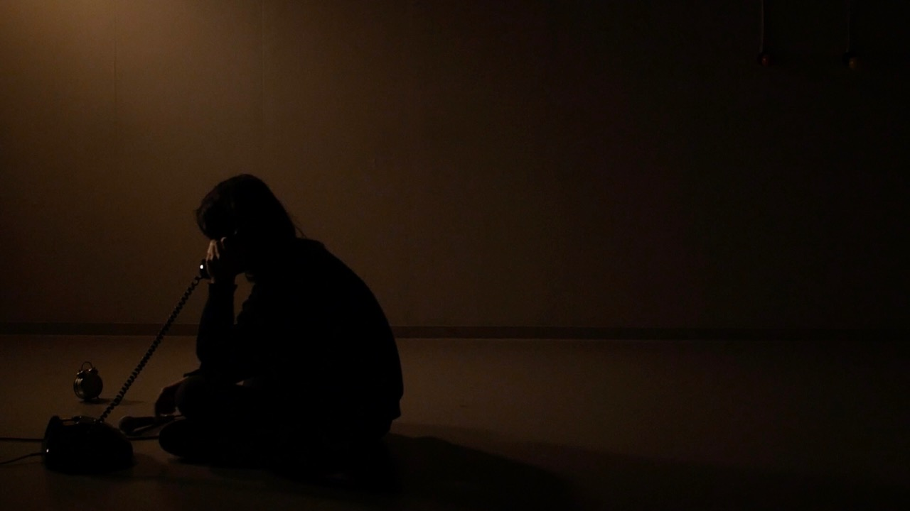

About
- 
誉田千尋 ほむたちひろ
English
音響作家。1992年愛知県生まれ。岐阜県を拠点に活動。
多摩美術大学の映像演劇学科（廃止）を中退後、名曲喫茶勤務のかたわらコンピュータ音楽を独学。情報科学芸術大学院大学［IAMAS］修士（メディア表現）。
誉田は2010年代初頭から音響再生産メディアを使用した作品を制作し続けている。それらの作品は、フィックスドメディアの電子音響音楽にはじまり、オーディオ・ヴィジュアル、本物のラジオや電話を用いたインスタレーション、コンピュータ・プログラムを用いた生成音楽、映画や舞台音響など多岐のジャンルにわたる。
彼の作品に通底しているのは、彼自身が抱える空虚な意思と疎外感との闘争である。彼の空疎な精神性への自覚は、両義性を伴うアンビエントな質感として追求され、荒廃した物質的・社会的現実へと接続される。彼の音に対する関心は、音声言語や音の指標的な性質、録音された音の表象に向けられている。彼は聴覚的な「意味のメカニズム」に敬意を払うと同時に、その限界や脆さ、不確かさをも提示することで、聴覚環境への批判的な没入に人を招き入れようとしている。
電子音響作品においては、彼の主題は中心のない混沌とした音空間、おびただしい音の粒子、超越的な経験の再現によって表現されている。それに加えて、彼は偶発的で流動的なリズムの使用によってアナーキーな身体感覚を称揚している。メディアインスタレーションでは、彼の主体性の希薄さは公共的なメディア環境の交話的なコミュニケーションへの関心として現れている。彼は国家が定めた標準時刻を作品の素材として使用することで、後期資本主義の停滞した時間感覚に輪郭を与えようとしている。
近年は自然表象やエコロジーをテーマにした作品を制作している。彼は19世紀以降の「音の自然（本質）」についての言説をT. モートンの環境哲学に接合し、和歌やヨーロッパの古典音楽を題材とした批評性の高い作品を制作している。
2023年、個展「霍公鳥 ほとゝぎす」を岐阜市で開催。2022年、Contemporary Computer Music ConcertでACSM116賞、MOTUS賞を受賞。そのほか、イメージフォーラム ・フェスティバル（東京ほか）、ボンクリフェス（東京）、SONIC MATTER FESTIVAL（スイス）、FESTIVAL FTURA（フランス）、MUSLUB（エクアドル）、アキバタマビ21（東京）、トーキョーワンダーサイト等で作品を発表。
彼はまた、川添彩、池添俊、清原惟など、日本の気鋭の映画作家との協働でも知られている。音響デザインを担当した川添彩監督『とおぼえ』（2021）は、IndieLisboa International Film Festival 2023でベストフィクションアワードを受賞。「素晴らしい撮影技術と畏敬の念を抱かせるサウンドデザインを備えた、不穏かつ詩的な映画」と評される。
Contact
///////////////////////////////////////////////////////////////////////////////////////////////////////////////////////////////
About
Chihiro HOMUTA
(Nobuhiko HAYASHI)
Artist of auditory media based in Gifu, Japan.
He was born in Aichi Prefecture in 1992. After graduating from high school, he moved to Tokyo and taught himself computer music while working at a classic music cafe. He holds a master's degree in Media Creation from the Institute of Advanced Media Arts and Sciences [IAMAS].
Since the early 2010s, he has been creating works using sound reproduction media. His works span a wide range of genres, including fixed-media electroacoustic music, audiovisuals, installations using real radios and telephones, generative music using computer programs, film and stage sound.
Underlying his works is his struggle with his own empty intentions and feelings of alienation. His awareness of empty spirituality is pursued as ambient textures accompanied by ambiguity, and is connected to the devastated material and social reality. His interest in sound is focused on spoken language, the indexical nature of sound, and the representation of recorded sounds. While paying homage to the auditory “mechanism of meaning”, he invites the audience into a critical immersion in the auditory environment by presenting its limitations, fragility and uncertainty.
In his electroacoustic works, his themes are expressed through chaotic sound spaces with no center, numerous sound particles, and the reproduction of transcendental experiences. In addition, he celebrates an anarchic sense of body through his use of accidental and fluid rhythms. In his media installations, his lack of agency manifests as an interest in the “phatic" communication of the public media environment. By using state-defined standard time as the material for his work, he attempts to give contour to the stagnant sense of time of late capitalism.
In recent years, he has been creating works with themes of natural representation and ecology. He combines discourses on the “nature of sound" from the 19th century onwards with T. Morton's ecological philosophy, and creates highly critical works based on Japanese poetry and European classical music.
In 2023, a solo exhibition “Hototogisu” will be held in Gifu City. In 2022, he won the ACSM116 Award and the MOTUS Award at the Contemporary Computer Music Concert. In addition, he has presented his works at Image Forum Festival (Tokyo and other places), Born Creative Festival (Tokyo), SONIC MATTER FESTIVAL (Switzerland), FESTIVAL FTURA (France), MUSLUB (Ecuador), Akibatamabi 21 (Tokyo), Tokyo Wonder Site, etc.
He is also known for his collaborations with up-and-coming Japanese filmmakers such as Aya Kawazoe, Shun Ikezoe, and Yui Kiyohara. “Howling” (2021), directed by Aya Kawazoe, who was in charge of the sound design, won the Best Fiction Award at the IndieLisboa International Film Festival 2023. It was described as “a disturbing and poetic film with great cinematography and an awe-inspiring sound design. ”
Contact